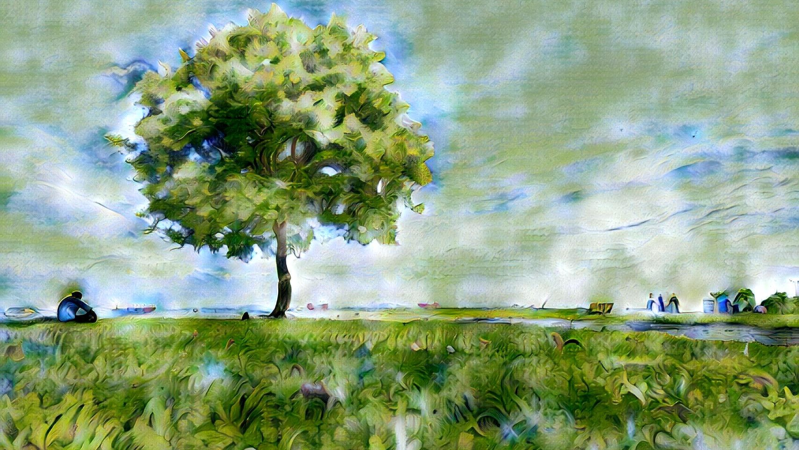
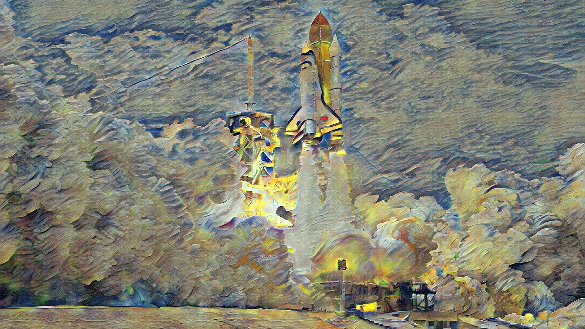

Inspiration starts
with you.
With Infusion, you can create amazing artworks in an instant. Whether you want to experiment with a particular artistic style or you want beautiful images created for your magazine, Infusion can do it all. With Infusion, anyone can be an artist.
See things from
a different angle.

Utilising the power of an AI, Infusion paints your photos in vivid styles. Whether you want to see your photo in Van Gogh's colourful strokes, or Picasso's sharp cubist lines, or even something completely new, completely different.
Dare to challenge
the status quo.
Experiment with styles that no one has seen before. Use Infusion's versatile AI to experiment with bold new styles. Even if it doesn't work out, you can always choose another style and try again. When you can make amazing artworks in an instant, failure is no longer an issue.
Unlimited. Unbound.
Like your potential.

Since Infusion is fully offline, you dictate your own schedule for AI art creation. Experience the freedom of creation without server queues or an internet connection. Infusion allows you to make art whenever you want, so you don't miss the moment when inspiration strikes.
An infinite stream
that never dries up.
With an infinite stream of artworks available at your fingertips, you will be able to power through creative block every time. Infusion can generate artworks almost instantaneously from any photo. Art is all around you. You just need to look.